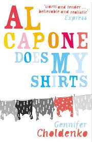
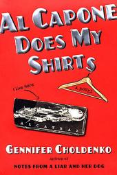
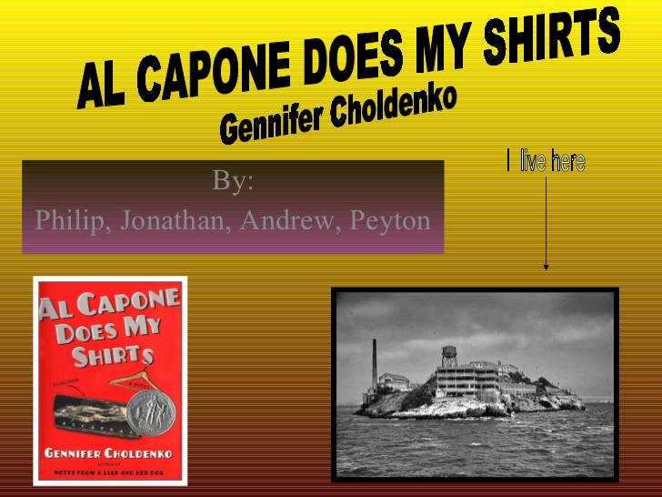

Books available in different designs
Al Capone Does My Shirts is a historical fiction novel for young adults by the author Gennifer Choldenko.
In this book, Mathew Flanagan and his family move from Santa Monica to Alcatraz Island. The move was caused by the father's new job positions as an electrician and as a guard in the well-known Alcatraz prison
  | ISBN Number | Author | Format | Edition | Publisher |
|---|---|---|---|---|
| 9876503452768 | Gennifer Choldenko | Book and eBook | 2nd - 2006 | Puffin Books Publishers |